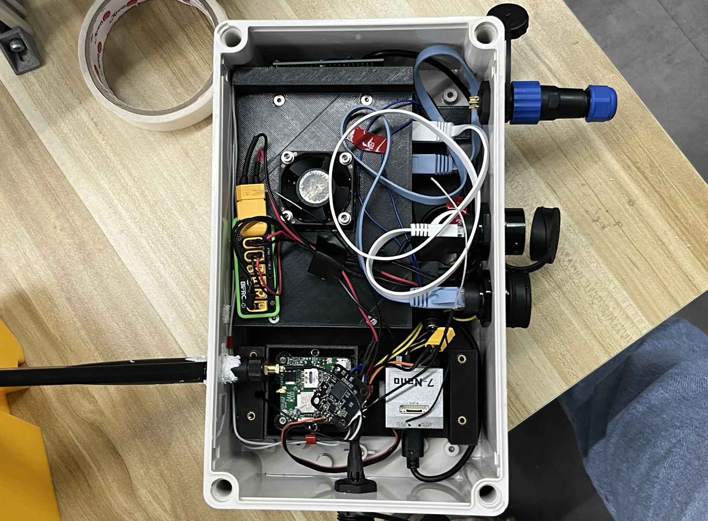
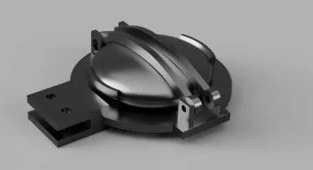
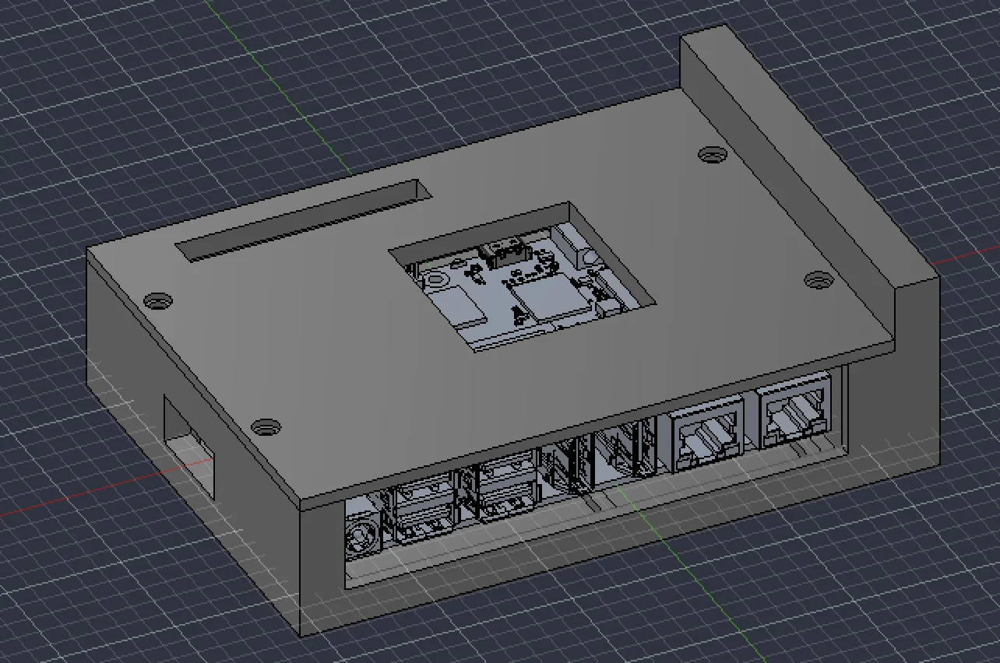
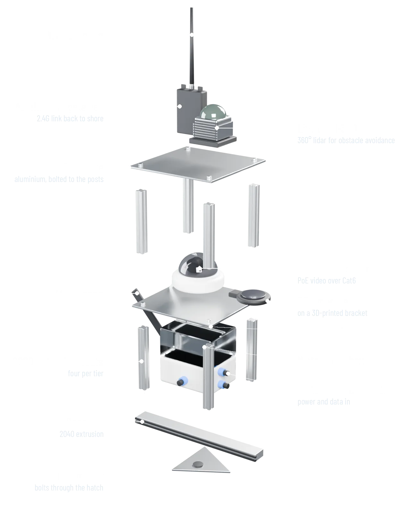
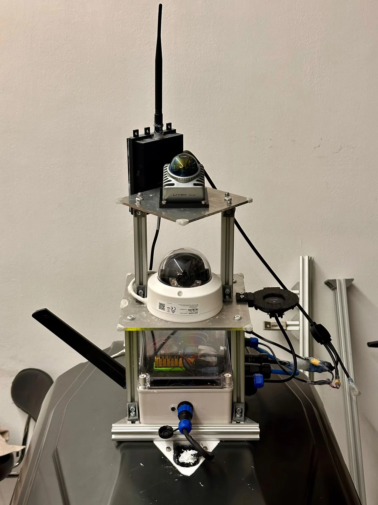

Unmanned Surface Vehicle
Solutions Engineer, Avetics Drone Technologies
- Role
- Solutions Engineer
- Timeline
- 3 months
- My part
- Autonomy stack, mechanical design, circuit design and manufacturing
- Outcome
- Field tests passed; the boat completed waypoint missions
Overview
A project to create Avetics' first small-scale USV capable of autonomous waypoint navigation and obstacle avoidance to conduct missions. It is equipped with video streaming and remote deployment.
I modified an RC boat to carry the hardware for the software stack below.
The software stack
Click a numbered button on the diagram to see what that part does.

Scroll sideways to see the whole stack.
Development
- 1Network and video
Initial development established network communication from the ground control to the boat over Wi-Fi and 4G, to set missions and enable low-latency camera streaming over RTSP.
- 2Obstacle avoidance
Integrated LIDAR and an object avoidance pipeline to inform the flight controller (LIDAR point cloud transformation).
Hardware


Physical skills
- Crimping and soldering custom connections
- CAD assembly
- Cable gland installation
- Building a voltage divider




Prototype mount
I designed and assembled it.


*Mockup

Actual, with 3D-printed partsResults and next steps
Field tests were successfully conducted, and the boat completed waypoint missions.
The LIDAR struggled because the filter algorithms omitted waves, and with them potential obstacles. The next step would be to integrate sonar and combine both datasets to guide obstacle avoidance.
Algorithms like Dijkstra's could also be applied to the nodal nature of our waypoints to compute the shortest path.
* The final design is omitted for confidentiality reasons.